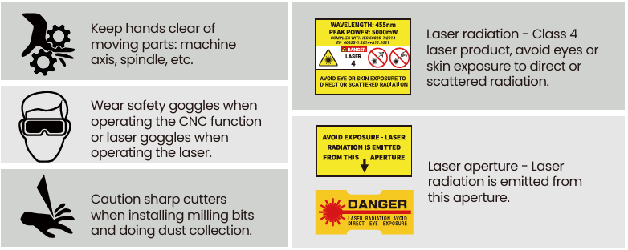
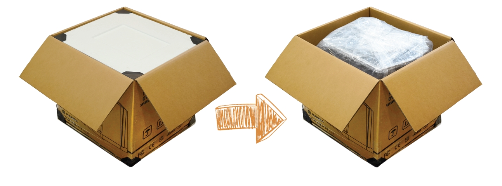
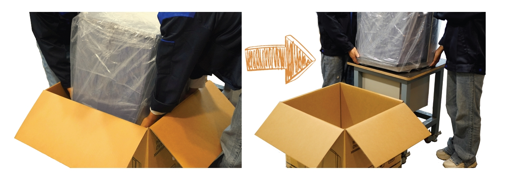
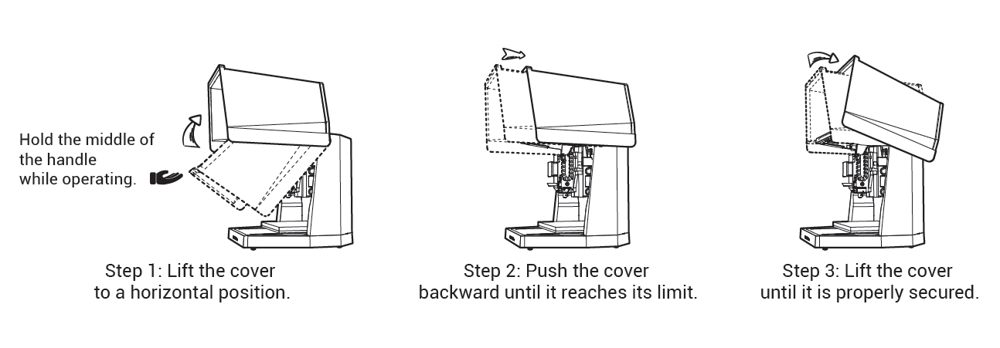
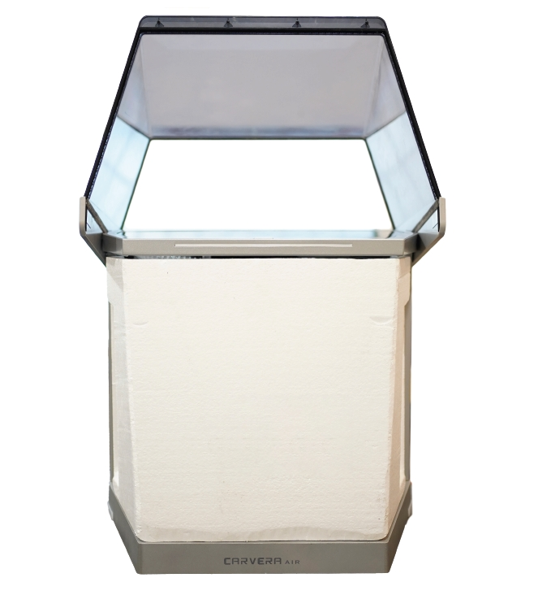
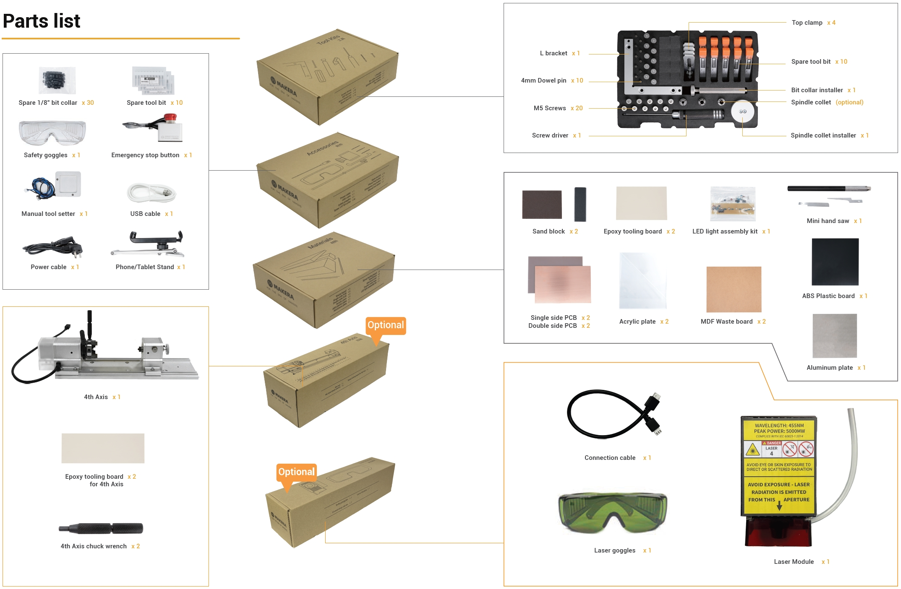
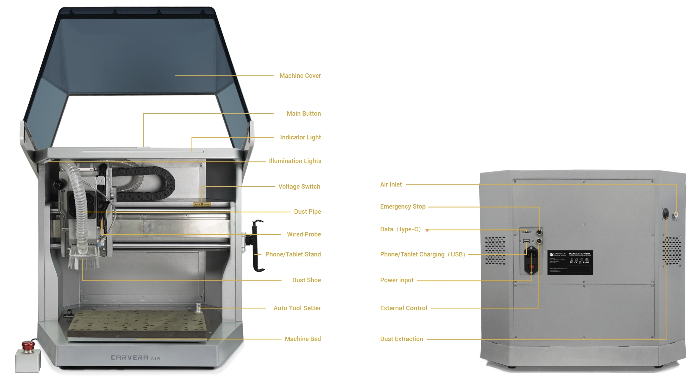
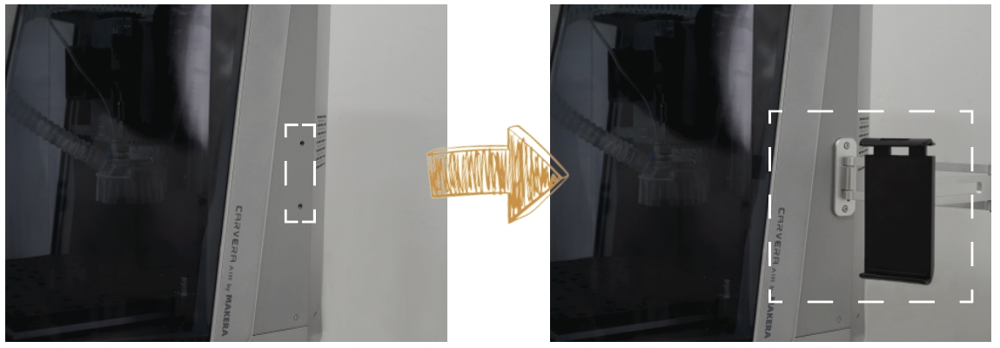
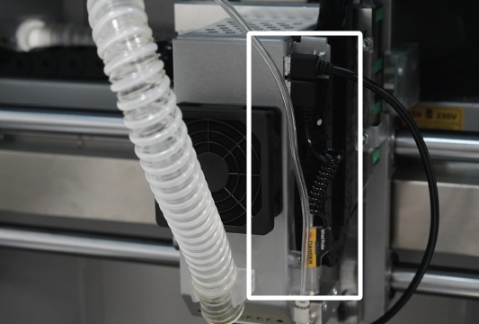
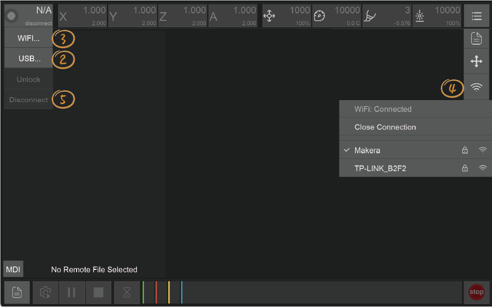

Disclaimer
Please read this manual carefully before using the Carvera Air. Failure to read the manual may lead to personal injury, inferior results, or damage to the Carvera Air machine.
This manual is provided for reference purposes only. We reserve the right to modify or revise this manual, users can download the most up-to-date version of this manual on our website.
You should always monitor machines when in use. Milling cutters revolving in high-speed, unstable components or laser module in operation are dangerous to people without protection. Please carefully read the safety instructions below to avoid unnecessary harm.
Safety Instructions
1. Always wear safety goggles when operating the machine, especially when the protective cover is open.
2. Always wear laser protection goggles when using the laser module.
3. Please wear hearing protection when Carvera Air is machining on the hard materials.
4. Do not leave your machine unattended while it is machining.
5. Please be aware of the sharpness of the milling bits during installation, dust collection, and other operations.
6. Milling will generate heat. Inappropriate parameters will cause fire hazards. Make sure an extinguisher is in your vicinity.
7. Some materials are harmful to people when machining, such as carbon fiber. Please wear a face mask and connect a vacuum for dust collection.
8. Do not expose this machine to rain or wet conditions.
9. Keep children and bystanders away while operating this machine. It requires supervision and the assistance of an adult when children use this machine.
If an emergency occurred in machining, such as the workpiece being loose from holding, components damaging, unusual light or sound coming from the machine, etc. Press the main button or E-Stop button, all ongoing procedures will stop immediately, or cut off the power to shut it down.
Carvera Air has a safety option that allows the machine to automatically stop working when opening the cover, which is useful for schools or work environments where children may reach.
FCC Compliance
This equipment has been tested and found to comply with the limits for a Class B digital device, pursuant to part 15 of the FCC Rules. These limits are designed to provide reasonable protection against harmful interference in a residential installation. This equipment generates, uses and can radiate radio frequency energy and, if not installed and used in accordance with the instructions, may cause harmful interference to radio communications. However, there is no guarantee that interference will not occur in a particular installation. If this equipment does cause harmful interference to radio or television reception, which can be determined by turning the equipment off and on, the user is encouraged to try to correct the interference by one or more of the following measures:
- Reorient or relocate the receiving antenna.
- Increase the separation between the equipment and receiver.
- Connect the equipment into an outlet on a circuit different from that to which the receiver is connected.
- Consult the dealer or an experienced radio / TV technician for help.
Caution: Any changes or modifications to this device not explicitly approved by manufacturer could void your authority to operate this equipment.
This device complies with part 15 of the FCC Rules. Operation is subject to the following two conditions:
(1) This device may not cause harmful interference, and (2) this device must accept any interference received, including interference that may cause undesired operation.
This equipment complies with FCC radiation exposure limits set forth for an uncontrolled environment. This equipment should be installed and operated with minimum distance 20cm between the radiator & your body.
ISEDC Compliance
This device complies with Innovation, Science and Economic Development Canada License exempt RSS standard(s). Operation is subject to the following two conditions:
(1) this device may not cause harmful interference, and (2) this device must accept any interference received, including inter ference that may cause undesired operation of the device.
Le présent appareil est conforme aux CNR d' Innovation, Sciences et Développement économique Canada applicables aux appareils radio exempts de licence. L'exploitation est autorisée aux deux conditions suivantes : (1) l'appareil nedoit pas produire de brouillage, et(2) l'utilisateur de l'appareil doit accepter tout brouillage radioélectrique subi, même si le brouillage est susceptible d'en compromettre le fonctionnement.
The device is compliance with RF exposure guidelines, users can obtain Canadian information on RF exposure nd compliance. The minimum distance from body to use the device is 20cm.
Le présent appareil est conforme Après examen de ce matériel aux conformité ou aux limites d’intensité de champ RF, les utilisateurs peuvent sur l’exposition aux radiofréquences et compliance d’acquérir les informations correspondantes. La distance minimale du corps à utiliser le dispositif est de 20cm.
Safety Labels

Unpack
The mass of the box weighs more than 45Kg/ 99lb. The net weight of the Carvera Air desktop milling machine is around 35Kg/77lb. We suggest moving this machine by at least two people (with gloves) to ensure both personal and machine’s safety. Please make sure your desk is sturdy enough and has no less than 60 x 60 cm space to place this machine.
Unpack
1. Remove the protective foam from the top and sides inside the box.

2. With the help of another person, carefully lift the machine out of the box from the positions shown in the illustration.

3. Place the machine on a stable, flat surface.
4. Remove the plastic packaging bag.
5. Carefully open the machine's top cover by following the operational steps shown in the illustration below.

6. Gently remove the inner foam and accessories from inside the machine.

Note: Please keep the wooden box, foam, plastic bag, fixing structures, and screws in a safe place for future use.
Parts list

Preparation

Power On
1. Plug the power cable and turn on the power switch.
2. Carvera Air homes all axes automatically and turn on the work lights.
Phone/Tablet Stand Installation
To facilitate transportation, the phone/tablet stand is not pre-installed. To install it, remove the screws from the stand base, position the stand, and secure it by reattaching the screws.
For your convenience, the stand can be installed on either the right or left side of the machine; the default position is the right side.

Check the Wired Probe
The wired probe is one of the main components of Carvera Air. It is an indispensable component for Z-axis tool setting and automatic leveling. Although the wired probe is already installed on the Carvera Air, please check that the wired probe is properly installed before using it for the first time.

Control Software Installation
1. Go to www.makera.com to download and install the Carvera Controller. It currently supports computers, tablets, and phones. We recommend using the computer version of the control software for your first use. Please refer to the next chapter for software instructions.
2. If you plan to connect via USB, download and install the Carvera Air USB driver.
WiFi Configuration (Recommended)
The purpose of configuring WIFI is to allow Carvera Air to join the network at your workplace so that your computer can control the machine without being restricted.
1. The network can be configured via a USB cable or the machine’s built-in WiFi accessing point.

2. Connect via USB: Connect the USB cable and open the Carvera Air control software. Click the status button in the status bar, click “USB...”, you will see your USB device and choose one to connect. Then the status button will be updated, displaying machine is connected in USB mode.
3. Connect via accessing point: Open the WiFi setting on your computer, find the accessing point named CARVERA_AIR_XXXXX and connect (No password). After successfully connected, open the Carvera Air control software; click the status button in the status bar; click” WIFI…”;Carvera Air will automatically search connectable devices. Please refresh it if Carvera Air cannot find any devices. After connecting to the device, the status button will be updated; displaying machine is connected in WiFi mode.
4. WiFi configuration: Click the “more” button (end of the status bar) in the status bar; click the WIFI icon, the system will start searching WIFI in the workplace. Select a WIFI, enter the password and connect. Please retry if the connection failed.
5. Disconnect: Click the status button; click “Disconnect”; Switch back to your WiFi.
6. Redo step 3 from Click “WIFI”to connect Carvera Air through WIFI.
Note: If you decide not to use Carvera Air for a long time, please keep a tool clamped in the spindle, but do not use the wireless probe. It will reduce the elasticity of the tool clamp without a tool for long time. The wireless probe cannot be charged automatically if it is not in the tool holder.